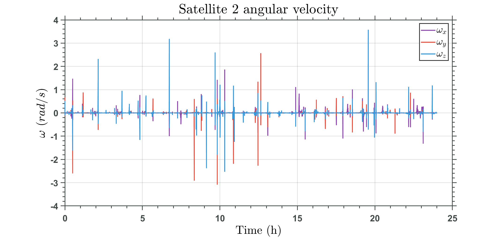
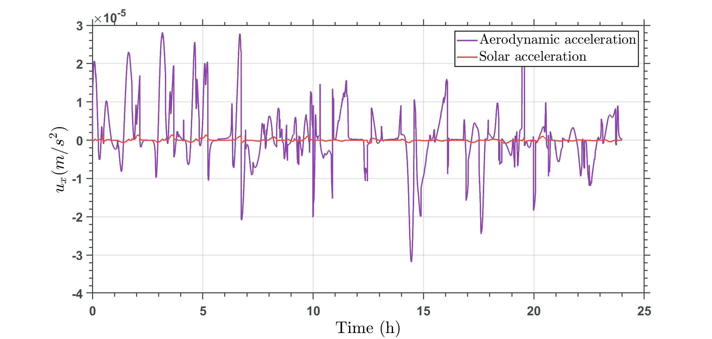

Controle de formações em voo de satélites utilizando forças aerodinâmicas e pressão de radiação solar
Caio Nahuel Sousa Fagonde
Willer Gomes dos Santos
Antônio Fernando Bertachini de Almeida Prado
UFABC
ITA
INPE
Sumário
- Introdução
- Objetivos
- Metodologia
- Resultados
- Conclusões
- Referências
Introdução
Formação em voo de satélites
- Uma formação em voo de satélites é um tipo de Sistema Espacial Distribuído.
- Este tipo de estratégia operacional tem se tornado cada vez mais popular devido à popularização do uso de pequenos satélites, tais como CubeSats
- Com esta abordagem, vários satélites pequenos podem realizar o trabalho que outrora necessitaria de um grande satélite monolítico.

Figura 1. Ilustração esquemática de uma formação em voo de satélites. Fonte: [1].
Uso de forças ambientais
- Muitos satélites pequenos apresentam, porém, limitações físicas ou operacionais em suas capacidades propulsivas para a realização do controle ativo de suas trajetórias relativas.
- Com isto em mente, o desenvolvimento de métodos alternativos de controle de formações baseados no uso de forças ambientais promete reduzir gastos propulsivos associados à realização de manobras de reconfiguração e manutenção da formação.
- Neste contexto, o presente trabalho explora o uso de forças aerodinâmicas e pressão de radiação solar como método de controle de formações em voo.
- O ajuste destas forças naturais é realizado através de manobras de atitude, que modificam a orientação do satélite em relação à atmosfera incidente e à direção do Sol.
Objetivos
Objetivo Geral
- Analisar o uso de forças aerodinâmicas e pressão de radiação solar como método de controle de formações em voo de satélites
Objetivos Específicos
- Explorar a literatura existente sobre o uso de forças aerodinâmicas e pressão de radiação solar como método de controle de formações em voo.
- Desenvolver um código para simulação da dinâmica de atitude e do movimento relativo de uma formação em voo, incluindo a perturbação causada pelo achatamento terrestre.
- Implementar um sistema de controle baseado no Regulador Linear Quadrático para controle translacional.
- Desenvolver um sistema de controle Lyapunov para a atitude dos satélites.
- Desenvolver um método de otimização sem restrições para obter a trajetória de atitude que minimiza o erro entre as acelerações diferenciais e a aceleração de controle comandada.
- Simular manobras de reconfiguração de formação utilizando forças ambientais.
Metodologia
Fundamentos de astrodinâmica
- O princípio fundamental que rege a dinâmica de satélites artificiais é a Lei da Gravitação Universal de Newton:
- Com esta expressão pode-se obter as equações de movimento de um corpo sob a atração gravitacional de um segundo corpo massivo, como a Terra.
\[\boldsymbol{F}_G = -\dfrac{\mathcal{G}m_1m_2}{|\boldsymbol{r}|^3}\boldsymbol{r}\]
Aceleração kepleriana
\[\begin{align}\boldsymbol{a}_{kep} &= -\dfrac{\mu}{|\boldsymbol{r}|^3}\boldsymbol{r}\\[1em] \mu &= \mathcal{G}M_{Terra}\end{align}\]
Órbitas keplerianas
- A trajetória de um corpo que se move sob o efeito apenas da aceleração kepleriana será uma seção cônica.
- Estas seriam "órbitas ideais", invariantes em relação a um sistema de referência inercial [2].
Figura 2. Exemplo de órbitas keplerianas. Fonte: Próprios autores.
Forças perturbadoras
- Em uma situação real, porém, outras forças irão influenciar a dinâmica de um corpo orbitante.
- Estas são classificadas como perturbações orbitais, pois fazem com que o sistema se afaste do ideal kepleriano.
- Exemplos de perturbações orbitais são a força aerodinâmica, e a pressão de radiação solar[3].
Acelerações perturbativas
\[\begin{align}\boldsymbol{a} &= \overbrace{-\dfrac{\mu}{|\boldsymbol{r}|^3}\boldsymbol{r}}^{\boldsymbol{a}_{kep}} + \underbrace{\sum \boldsymbol{a}_{pert}}_{\text{pert.}}\end{align}\]
Dinâmica Relativa em Formações em Voo
Abordagens de coordenação
- Rastreamento Orbital - Sistema Inercial (ECI).
- Líder-Seguidor - Sistema Girante (LVLH).
- Estrutura Virtual - Sistema Girante (LVLH).
- Para as abordagens do tipo Líder-Seguidor e Estrutura Virtual, deve-se definir um modelo de dinâmica relativa [4].
Figura 3. Sistemas de referência ECI e LVLH. Fonte: Próprios autores.
Modelo de dinâmica relativa
- O modelo de dinâmica relativa irá determinar como o estado relativo de um satélite seguidor evolui com o tempo.
- Para esta análise, escolheu-se um modelo não-linear, que incorpora a perturbação do $J_2$ [5].
Modelo de dinâmica relativa
\begin{equation} \begin{split} \label{xdd}\ddot{x}_j &= 2\dot{y}_j\omega_z - x_j(n_j^2 - \omega_z^2) + y_j\alpha_z - z_j\omega_x\omega_z \\&- (\zeta_j - \zeta)\sin{i_0}\sin{\theta} - r\bigg(n_j^2-n^2\bigg) + a_{jx} \end{split} \end{equation} \begin{equation} \begin{split} \ddot{y}_j &= -2\dot{x}_j\omega_z + 2\dot{z}_j\omega_x - x_j\alpha_z - y_j(n_j^2 - \omega_z^2 - \omega_x^2) \\&+ z_j\alpha_x - (\zeta_j - \zeta)\sin{i_0}\cos{\theta} + a_{jy} \end{split} \end{equation} \begin{equation} \begin{split} \label{zdd}\ddot{z}_j &= -2\dot{y}_j\omega_x - x_j\omega_x\omega_z - y_j\alpha_x - z_j(n_j^2 - \omega_x^2) \\&- (\zeta_j - \zeta)\cos{i_0} + a_{jz}\\[1em] \end{split} \end{equation}
- $\zeta_i$, $n_i$: Fatores não-lineares influenciados pela perturbação do $J_2$.
- $\omega_i$, $\alpha_i$: Velocidades e acelerações angulares associados à rotação do referencial LVLH.
Modelagem de forças
- O modelo utilizado para a força aerodinâmica segue o exemplo de Ivanov et al. [6].
- Este modelo incorpora efeitos de interação gás-superfície, e modela o perfil de reflexão com base em uma distribuição de Maxwell de partículas especularmente e difusamente refletidas.
- A pressão de radiação solar segue o modelo utilizado por Thoemel et al. [7].
- Neste caso, a pressão de radiação solar também é modelada como apresentando uma porcentagem de reflexão especular e de reflexão difusa.
Reflexão especular e difusa
Figura 4. Reflexão especular e difusa de um feixe incidente. Fonte: Próprios autores.
Força aerodinâmica
A força aerodinâmica é uma força causada pela interação entre o satélite e as partículas da atmosfera incidente. Ela depende da área superficial (S), densidade atmosférica ($\rho$), a magnitude da velocidade relativa (V), coeficientes intrínsecos de interação gás-superfície ($\epsilon$ e $\eta$), assim como a direção normal à superfície e a direção da velocidade relativa à atmosfera incidente ($\hat{n}$ e $\hat{e}_v$, respectivamente).
Aceleração aerodinâmica
\[\begin{split} \boldsymbol{a}_{aero} = &-\dfrac{1}{m}\rho V^2 S [(1-\epsilon)(\hat{e}_v \cdot \hat{n})\hat{e}_v \\&+ 2\epsilon(\hat{e}_v \cdot \hat{n})^2\hat{n} + \eta(1-\epsilon)(\hat{e}_v \cdot \hat{n})\hat{n} ] \end{split}\]
Pressão de radiação solar
Já a pressão de radiação solar é uma força que surge devido à incidência de feixes de fótons provenientes do Sol. Esta força depende da área superficial (S), pressão de radiação solar ( $p_{srp}$), coeficientes de reflexão especular ( $r_s$) e reflexão difusa ( $r_d$), assim como a direção normal à superfície e a direção do Sol ($\hat{n}$ e $\hat{e}_s$, respectivamente). Além disso, ela será modulada por uma função de sombra ($\nu$).
Pressão de radiação solar
\[\begin{split} \boldsymbol{a}_{srp} = &-p_{srp}\dfrac{S}{m}\nu\cos{\gamma}\bigg[(1-r_s)\hat{e}_s \\&+ 2 \left(r_s\cos{\gamma} + \frac{1}{3}r_d \right)\hat{n}\bigg] \end{split}\]
Acelerações diferenciais
A dinâmica relativa será influenciada apenas por diferenças nas acelerações que afetam cada satélite. Desta forma, podemos definir as acelerações diferenciais:
Aceleração diferencial
\begin{equation} \boldsymbol{u}_{env} = \delta{\boldsymbol{a}_{srp}} + \delta{\boldsymbol{a}_{aero}} \end{equation}
Dinâmica de Atitude
Referencial de Corpo dos satélites
Figura 5.Referencial de Corpo dos satélites. Fonte: Próprios autores.
Cinemática de Atitude
\begin{equation} \dot{\boldsymbol{q}} = \dfrac{1}{2}B(\boldsymbol{q})\boldsymbol{\omega} \end{equation}
\begin{equation} B(\boldsymbol{q}) = \begin{bmatrix} - q_1 & -q_2 & -q_3\\[1em] q_0 & -q_3 & q_2\\[1em] q_3 & q_0 & -q_1\\[1em] -q_2 & q_1 & q_0\end{bmatrix}. \end{equation}
Dinâmica de Atitude
\begin{equation}\label{EulerRotMotion} J\dot{\boldsymbol{\omega}} = -[\tilde{\boldsymbol{\omega}}]J\boldsymbol{\omega} + \boldsymbol{u} + \boldsymbol{L} \end{equation}
\begin{equation} [\tilde{\boldsymbol{\omega}}] = \begin{bmatrix}0 & -\omega_3 & \omega_2\\[1em] \omega_3 & 0 & -\omega_1\\[1em] -\omega_2 & \omega_1 & 0\end{bmatrix}. \end{equation}
Sistemas de controle para o movimento translacional e para a atitude
- Um Regulador Linear Quadrático será implementado para obter os valores de aceleração de controle comandados para o movimento translacional.
- Para o controle de atitude, uma Função de Controle Lyapunov será implementada, de forma a fazer com que os satélites sigam a trajetória de atitude desejada.
Regulador Linear Quadrático
- O Regulador Linear Quadrático (LQR) é um tipo de sistema de controle ótimo para sistemas lineares [8].
- Devido à natureza não-linear da planta escolhida, o controle LQR será desenvolvido utilizando as Equações de Clohessy-Wiltshire como uma aproximação linear.
Equações de Clohessy-Wiltshire
\begin{align} \label{clohessy1} \ddot{x} &= 2n\dot{y} + 3n^2x + u_x \\[1em] \ddot{y} &= -2n\dot{x} + u_y \label{clohessy2}\\[1em] \ddot{z} &= -n^2z + u_z \label{clohessy3} \end{align}
Modelagem em espaço de estados
\begin{equation}\label{ss} \dot{\boldsymbol{x}} = A\boldsymbol{x} + B\boldsymbol{u} \end{equation}
Índice de custo quadrático
\begin{equation}\label{LQRJ} J = \dfrac{1}{2}\int_0^{t_f} \bigg(\boldsymbol{x}^TQ\boldsymbol{x} + \boldsymbol{u}^TR\boldsymbol{u}\bigg)dt \end{equation}
Equação Algébrica de Ricatti
\begin{equation} PA + A^TP - PBR^{-1}B^TP + Q = 0 \end{equation}
Aceleração de controle
\begin{equation}\label{controlAction} \boldsymbol{u} = - K\boldsymbol{e} \end{equation}
Controle Lyapunov
- Uma Função de Controle Lyapunov é um método de controle baseado na análise de estabilidade de sistemas utilizando o Teorema de Lyapunov [9].
- Condições para que $V(x)$ seja uma Função Lyapunov:
- $V(x)$ é positiva definida em torno de $x_r$.
- $V(x)$ possui derivadas parciais contínuas.
- $\dot{V}(x)$ é negativa semi-definida.
Se existe uma Função Lyapunov $V(x)$ para um sistema dinâmico $\dot{x} = f(x)$, então este sistema será estável em torno da origem.
Função Lyapunov Candidata
\begin{equation} V(\boldsymbol{q},\boldsymbol{\omega}) = K(\boldsymbol{q} - \boldsymbol{q}_r)^T(\boldsymbol{q} - \boldsymbol{q}_r) + \dfrac{1}{2}\boldsymbol{\omega}^T\boldsymbol{\omega} \end{equation}
Taxa Lyapunov
\begin{equation} \dot{V}(\boldsymbol{q},\boldsymbol{\omega}) = K\boldsymbol{\omega}^TB(\boldsymbol{q})^T\boldsymbol{q}_e + \boldsymbol{\omega}^T\dot{\boldsymbol{\omega}} \end{equation}
Garantindo que a função será semi-definida negativa
\begin{equation} \dot{V}(\boldsymbol{q},\boldsymbol{\omega}) = K\boldsymbol{\omega}^TB(\boldsymbol{q})^T\boldsymbol{q}_e + \boldsymbol{\omega}^T\dot{\boldsymbol{\omega}} = -\dfrac{1}{2}\boldsymbol{\omega}^T[P]\boldsymbol{\omega} \end{equation}
Equação para o torque de controle
\begin{equation} \boldsymbol{u} = J\left\{-\dfrac{1}{2}[P]\boldsymbol{\omega} - KB(\boldsymbol{q})^T\boldsymbol{q}_e\right\} +[\tilde{\boldsymbol{\omega}}]J\boldsymbol{\omega} - \boldsymbol{L}. \end{equation}
Erro de quaternion
\begin{equation} \boldsymbol{q}_e = \boldsymbol{q} - \boldsymbol{q}_r \end{equation}
Implementação do algoritmo
- Calcula-se o erro de estado atual: $\boldsymbol{e}$
- Obtém-se o vetor de controle desejado utilizando o LQR.
- Encontra-se a orientação do vetor normal à superfície $\hat{n}$ para cada satélite que minimiza o erro entre as acelerações diferenciais e o controle comandado.
- Através do vetor normal, obtém-se o quaternion desejado para a atitude de cada satélite.

Figura 6. Parametrização do vetor normal. Fonte: Próprios autores.
Resultados
Parâmetros de simulação
- O modelo atmosférico escolhido para cálculo da densidade foi o NRLMSISE-00.
- Ele depende de valores de fluxo solar, que foram obtidos diretamente de servidores da NOAA.
| Propriedade | Valor |
|---|---|
| Massa | 10 kg |
| Área superficial | 2 m$^2$ |
| $\epsilon$ | 0.1 |
| $\eta$ | 0.1 |
| $r_d$ | 0.007 |
| $r_s$ | 0.0727 |
Tabela 1. Parâmetros físicos dos satélites.
Parâmetros de controle
| Propriedade | Valor |
|---|---|
| Q | $\mathcal{I}_{6x6}$ |
| R | diag[$3\cdot 10 ^{13}$, $4.5 \cdot 10^{12}$, $3\cdot 10^{13}$] |
| K | 10 |
| [P] | diag[$4$] |
Tabela 2. Parâmetros de controle.
Manobras de reconfiguração
- As trajetórias relativas iniciais e finais foram escolhidas como PCOs - Projected Circular Orbits.
- Este é um tipo de trajetória relativa na qual a projeção no plano y-z do movimento relativo do seguidor no referencial LVLH é um círculo.
Simulação 1
| $h_0$ | 350 km |
|---|---|
| $i_0$ | $51.64^\circ$ |
| $e_0$ | 0 |
| $\rho_i$ | 100 m |
| $\rho_f$ | 80 m |
Tabela 3. Parâmetros da primeira simulação.
Trajetória relativa
Figura 7. Trajetória relativa.
Controle em X
Figura 8. Controle comandado e implementado em X.
Controle em Y
Figura 9. Controle comandado e implementado em Y.
Controle em Z
Figura 10. Controle comandado e implementado em Z.
Erro em X
Figura 11. Erro em X.
Erro em Y
Figura 12. Erro em Y.
Erro em Z
Figura 13. Erro em Z.
Projeção Y-Z
Figura 14. Projeção no plano Y-Z.
Raio projetado instantâneo
Figura 15. Variação do raio projetado instantâneo.
Velocidade angular - Satélite 1
Figura 16. Velocidade angular do satélite 1.
Velocidade angular - Satélite 2
Figura 16. Velocidade angular do satélite 2.
Contribuições das forças ambientais - X
Figura 17. Acelerações diferenciais ambientais em X.
Contribuições das forças ambientais - Y
Figura 18. Acelerações diferenciais ambientais em Y.
Contribuições das forças ambientais - Z
Figura 19. Acelerações diferenciais ambientais em Z.
Simulação 2
| $h_0$ | 350 km |
|---|---|
| $i_0$ | $51.64^\circ$ |
| $e_0$ | 0 |
| $\rho_i$ | 500 m |
| $\rho_f$ | 300 m |
Tabela 4. Parâmetros da segunda simulação.
Trajetória relativa
Figura 20. Trajetória relativa.
Controle em X
Figura 21. Controle comandado e implementado em X.
Controle em Y
Figura 22. Controle comandado e implementado em Y.
Controle em Z
Figura 23. Controle comandado e implementado em Z.
Erro em X
Figura 24. Erro em X.
Erro em Y
Figura 25. Erro em Y.
Erro em Z
Figura 26. Erro em Z.
Projeção Y-Z
Figura 27. Projeção no plano Y-Z.
Raio projetado instantâneo
Figura 28. Variação do raio projetado instantâneo.
Velocidade angular - Satélite 1
Figura 29. Velocidade angular do satélite 1.
Velocidade angular - Satélite 2
Figura 30. Velocidade angular do satélite 2.
Contribuições das forças ambientais - X
Figura 31. Acelerações diferenciais ambientais em X.
Contribuições das forças ambientais - Y
Figura 32. Acelerações diferenciais ambientais em Y.
Contribuições das forças ambientais - Z
Figura 33. Acelerações diferenciais ambientais em Z.
Simulação 3
| $h_0$ | 700 km |
|---|---|
| $i_0$ | $51.64^\circ$ |
| $e_0$ | 0 |
| $\rho_i$ | 60 m |
| $\rho_f$ | 40 m |
Tabela 5. Parâmetros da terceira simulação.
Trajetória relativa
Figura 34. Trajetória relativa.
Controle em X
Figura 35. Controle comandado e implementado em X.
Controle em Y
Figura 36. Controle comandado e implementado em Y.
Controle em Z
Figura 37. Controle comandado e implementado em Z.
Erro em X

Figura 38. Erro em X.
Erro em Y
Figura 39. Erro em Y.
Erro em Z
Figura 40. Erro em Z.
Projeção Y-Z
Figura 41. Projeção no plano Y-Z.
Raio projetado instantâneo
Figura 42. Variação do raio projetado instantâneo.
Velocidade angular - Satélite 1
Figura 43. Velocidade angular do satélite 1.
Velocidade angular - Satélite 2
Figura 44. Velocidade angular do satélite 2.
Contribuições das forças ambientais - X
Figura 45. Acelerações diferenciais ambientais em X.
Contribuições das forças ambientais - Y
Figura 46. Acelerações diferenciais ambientais em Y.
Contribuições das forças ambientais - Z
Figura 47. Acelerações diferenciais ambientais em Z.
Conclusões
- Este trabalho analisou o uso de forças ambientais como método de controle de formações.
- Um sistema de controle Lyapunov para atitude foi desenvolvido, de forma a seguir uma trajetória de atitude de referência.
- Manobras de reconfiguração da formação em voo foram simuladas, transferindo o seguidor entre trajetórias PCOs.
- Pesquisas futuras podem aprimorar esta análise implementando um sistema de controle não-linear para o movimento translacional e investigando a aplicação desta técnica em órbitas excêntricas.
Referências
- Ambrosini, M. GPS Precise Relative Positioning of Formation Flying Satellites. The Journal of Space Operations & Communicator, 2017.
- Chobotov, V. A., Orbital mechanics. American Institute of Aeronautics and Astronautics, 2002.
- Vallado, D. A. Fundamentals of astrodynamics e applications. Vol. 12. Springer Science & Business Media, 2001.
- Alfriend, Kyle T., et al. Spacecraft formation flying: Dynamics, control and navigation. Vol. 2. Elsevier, 2009.
- Wang, D., Wu, B., Chung, E. K. P. Satellite Formation Flying. Springer Singapore, 2017.
- Ivanov, D., Kushniruk, M., Ovchinnikov, M. Study of satellite formation flying control using differential lift and drag. Acta Astronautica, 2018.
- Thoemel, J., van Dam, T.. Autonomous formation flight using solar radiation pressure. CEAS Space Journal, 2021.
- Mathavaraj, S., Padhi, R. Satellite Formation Flying: High Precision Guidance Using Optimal and Adaptive Control Techniques. Springer Nature, 2021.
- Junkins, J. L., Schaub, H. Analytical mechanics of space systems. American Institute of Aeronautics and Astronautics, 2009.
Agradecimentos
Os autores gostariam de agradecer à Coordenação de Aperfeiçoamento de Pessoal de Nível Superior (CAPES) - código de financiamento 001; à Fundação de Ciências, Aplicações e Tecnologias Espaciais (FUNCATE) - código 1042017008, e ao grupo de pesquisa E$^2$MoC por todo o apoio.